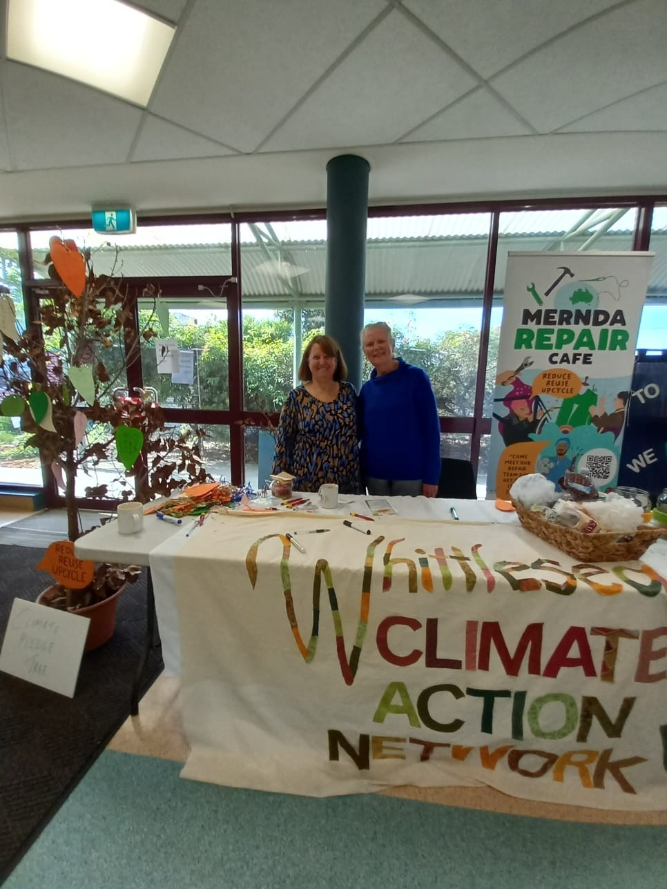
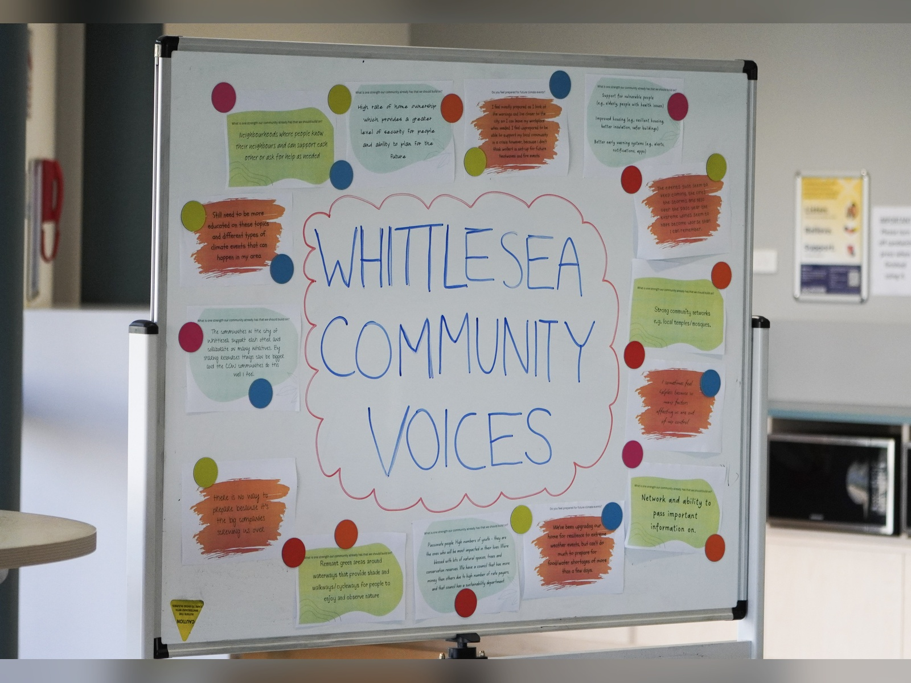
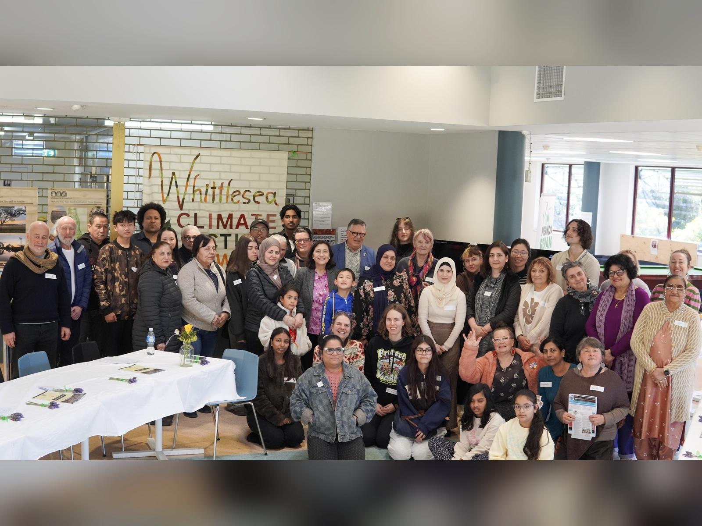
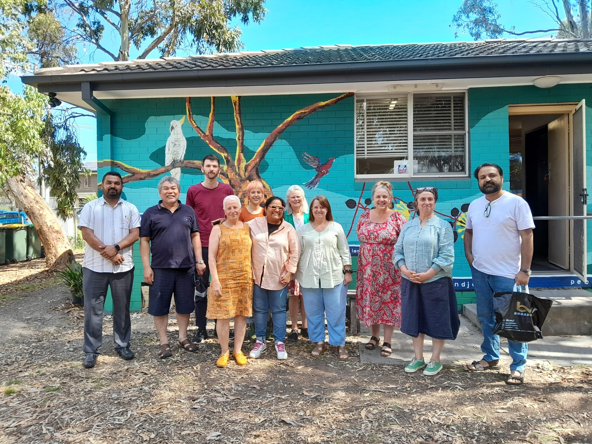

Climate action, led by our community.
We bring people together to learn, prepare and act on climate change, right here in Victoria.
A local network for a shared future
The Whittlesea Climate Action Network is a local community group that aims to raise awareness of, and deepen understanding of, the current impacts of climate change within the Municipality of City of Whittlesea, while fostering a culture of sustainable action and advocacy to protect our ecosystems, environment, and future.
What began in 2024 with 10 community members, after discovering that no climate action groups were operating specifically for City of Whittlesea, has steadily grown into a network of more than 40 dedicated members.

Our community in action

Whittlesea Community Voice

Meetup

Community Activities

Community Connect

Taking Our Message to the Community
What we work on
- Learn more
Climate change awareness and education
Sharing knowledge about climate change and its local impacts.
- Learn more
Community engagement and connection
Bringing people together through conversations, community meetings, workshops and events.
- Learn more
Local climate action and sustainability
Encouraging practical actions that support a healthier environment and a more sustainable future.
- Learn more
Climate resilience and preparedness
Building community understanding and capacity to respond to local climate risks, including extreme heat and bushfires.
- Learn more
Advocacy, partnerships and community-led planning
Amplifying community voices, working with local organisations and building towards a future Community Climate Action Plan.
Latest news
Have your say on climate action in our community!
Help us shape a more climate-ready City of City of Whittlesea by completing the Community Voices on Climate and Community Wellbeing survey.
The survey explores experiences of climate change and extreme weather, and how these affect community health and wellbeing. Your feedback will help us better understand local needs and inform future climate initiatives, programs and support.
Whether you’ve experienced the impacts of extreme weather or just want to share your ideas and expertise for building a more resilient community, we’d like to hear from you.
Every response helps create a more refined and sustainable plan for the future of City of Whittlesea.
Responses are collected through Microsoft Forms. See our Privacy Policy.
Prepare for extreme heat and bushfire
Victoria is facing hotter days and longer fire seasons. A few steps now can make a big difference.
- Know your local risk and make a plan with your household.
- Check on neighbours, especially older people, during hot days.
- Follow official warnings from VicEmergency.
Community voices
We need to be custodians, keepers and carers.
How we connect with our community
Community conversations
Focus groups, informal meet-ups, resilience mapping and community listening.
Creative activities
Our Waste Quiz and Climate Pledge Tree start friendly conversations about sustainability.
Local events
We take part in community events and have engaged with more than 500 people.